I'm a grad student currently pursuing a degree in Computer Science. I have completed a 9-month software
engineering co-op at CropOne(vertical farming startup) and now seeking full-time opportunities.
I enjoy building awesome software that solves problems.
When I'm not coding, you can find me spending my time watching tech and self-improvement videos.
I also have a interest in Artificial Intelligence and Machine Learning.
Technical Skills
Languages & Tools
Frameworks & Libraries
And of Course, Linux!
Experiance
Software Engenering Co-op [ April 2022 - January 2023 ]
Devised and executed a plant growth performance measurement application, augmenting R&D for a forthcoming product (Python, OpenCV)
Successfully addressed 56 feature requests and bug fixes on a farm management software application, enhancing and sustaining vertical farm production efficiency (Python, VueJS)
Engaged in cross-functional collaborations for requirement gathering, user story creation, and feedback iteration, aiding in comprehensive project development.
Facilitated QA testing through the simulation of programmable logic controller (PLC) values in internal environments, ensuring effective development changes.
Contributed to the talent acquisition process through active involvement in intern interviews, selection of competent candidates, and document creation to streamline handovers for incoming development teams.
Qualifications
University of Massachusetts Lowell
Master of Science in Computer Science [ Graduating 2025 ]
University of Massachusetts Lowell
Bachelor of Science in Computer Science [ Graduated December 2021 ]
Minor in Mathematics
Relevant Coursework:
Advanced Mobile Robots, Machine Learning, Algorithm Analysis, Applied Statistics,
Data Structures C/C++, Comp. Architecture & Assembly, Computing series,
Object-Oriented Analysis and Design, Web Development
Projects
Personal Portfollio Website
My Personal Portfolio Website made using only HTML, CSS and JS with a clean and minimal UI.
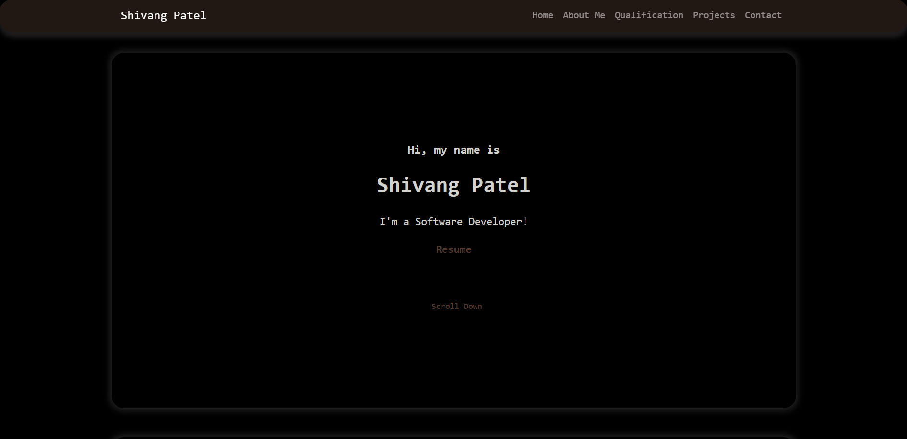
Marketplace Homestays
streamlines property rentals for both users and owners. Users can create an account, search and filter accommodations, save favorites, and manage trip reservations. Property owners can list their rentals, edit listings, and manage incoming reservation requests with features like accepting, declining, and messaging guests.
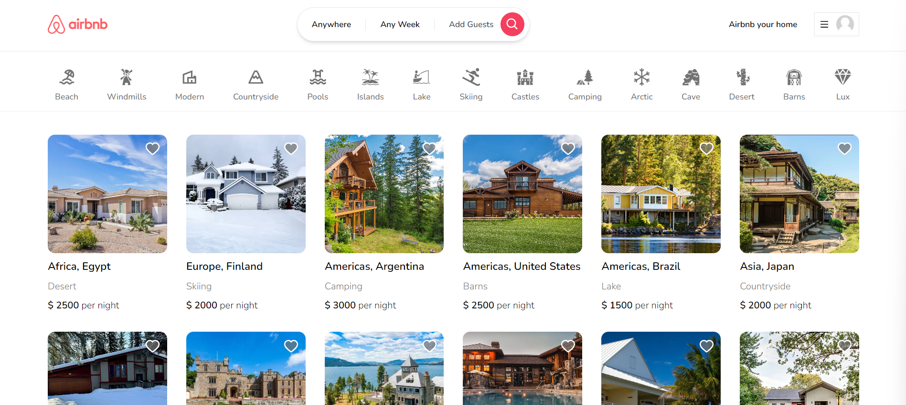
Sorting Algorithm Visualizer
Sorting Algorithm Visualizer is an interactive web application that allows users to visualize various sorting algorithms in action. Users can adjust the size of the array, choose the speed of the visualization, and select from a range of popular sorting algorithms to see how they work on randomly generated arrays.
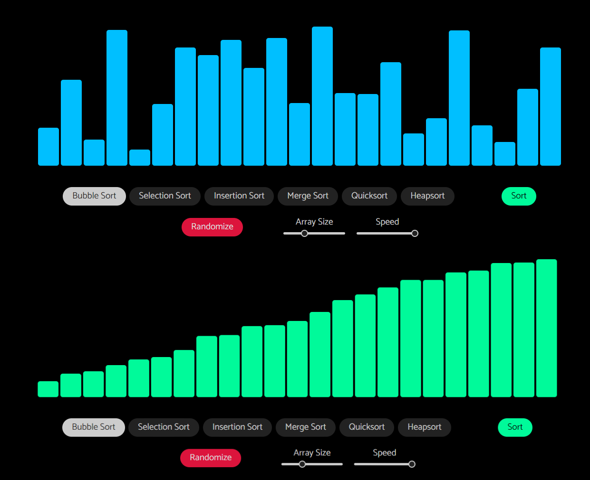
pokemon-index
web application that displays information about Pokémon. Users can search for Pokémon by name using a search bar. When a Pokémon is selected, the application displays details about that Pokémon, including its image, name, types, description, height, weight, abilities, stats, and evolution chain. The code also includes features like a loading indicator, a back-to-top button, and responsive design.
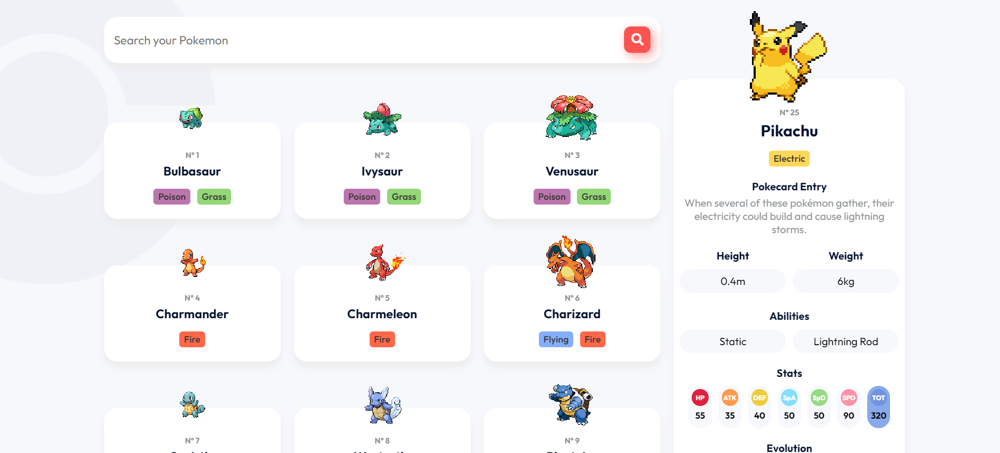
LaneVision
LaneVision is a simple lane detection software built using Python, OpenCV, Numpy, and Matplotlib. The software
takes in a video and returns the detected lane lines as an MP4 video. It's intended for use in self-driving
cars as a basic building block.
Technologies used: Python, OpenCV, Numpy, and Matplotlib
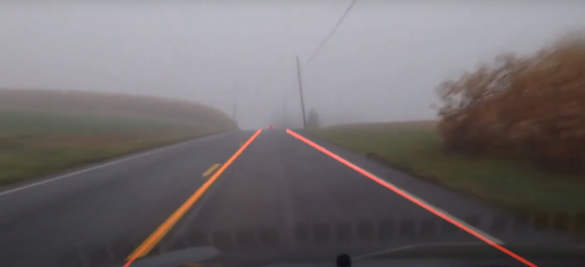
Mobile Robot - Fall 2021
Academic projects
Developed an intelligent ground mobile robot that leverages advanced camera vision and digital sensors to autonomously detect and approach user-specified colored balloons for targeted popping. The system incorporates a servo motor-operated arm for accurate balloon interaction, and features custom C programming using the KIPR Wombat library for seamless navigation, object detection, and user input processing, offering an engaging and interactive user experience.
PixelColor Detective
web application that allows users to upload images, extract colors by clicking on specific areas of the image, and maintain a color history. Users can clear their color history and download a PDF version of their extracted color palette.
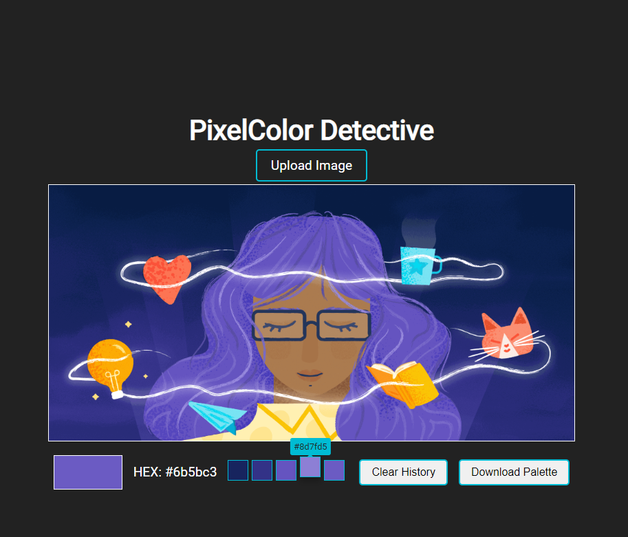
Crypto Market Data Viewer
Crypto Price Tracker web application, which displays a table of cryptocurrency data, including rank, name, symbol, price in USD, and the 24-hour percentage change. The application allows users to:
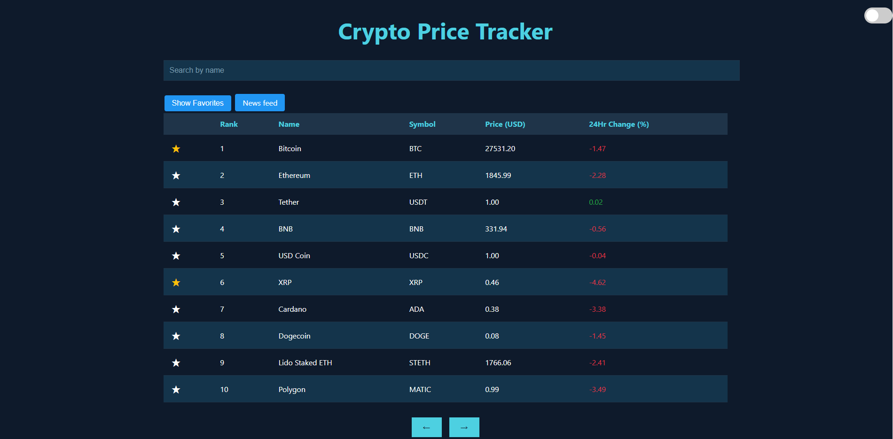
Palindrome Checker
A simple web application to check if a given word or number is a palindrome.
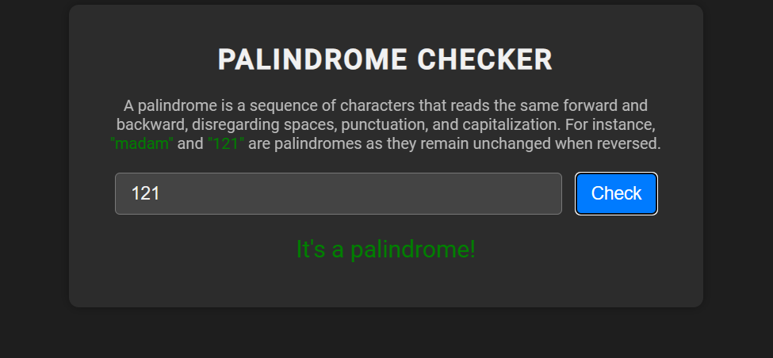
Chrome extension InstaScroll
I created this extension because I frequently use Instagram on my laptop, and scrolling through posts using the mouse can be tedious. This extension simplifies the browsing experience by providing convenient Up and Down arrow buttons for smoother navigation.
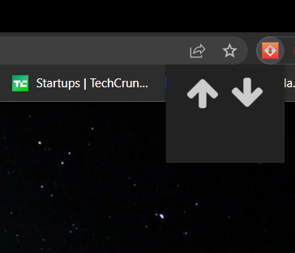
Color Palette Generator
This Color Palette Generator is a user-friendly web application that enables users to generate random color palettes, useful for designers, artists, and developers. The application offers a dark and light theme, a customizable number of colors for the palette, and maintains a history of the last five palettes generated.
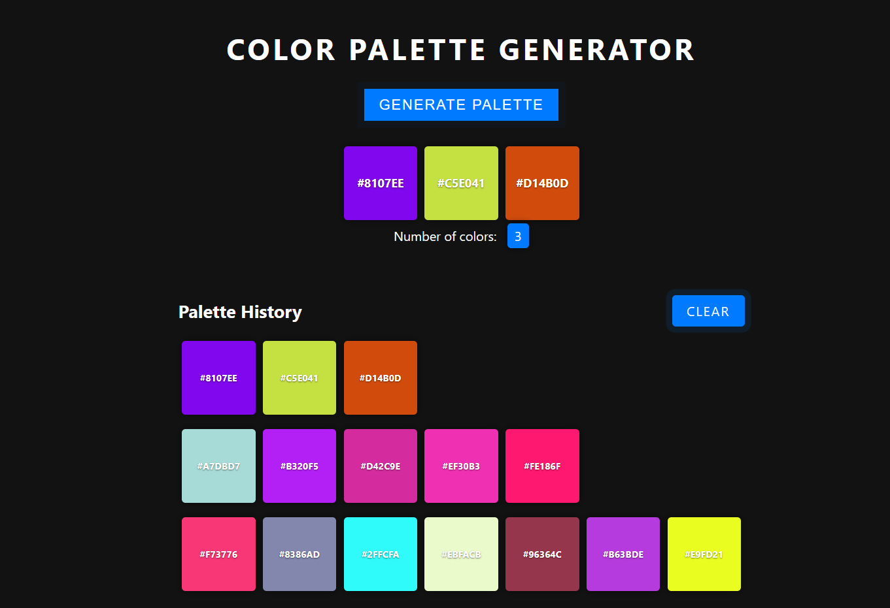
Login Page
simple login page, created using HTML, CSS, and JavaScript. It provides a user-friendly interface for users to enter their credentials, with options to log in using social media accounts like Google, Apple, and Facebook.
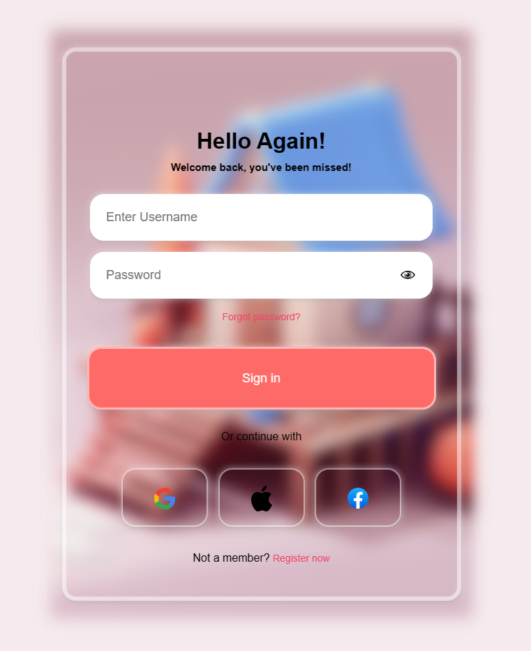
Minimalist Animated Clock
This is a minimalist animated clock with date and day that displays the time, date, and day of the week. It also includes a toggle button that allows users to switch between 12-hour and 24-hour time formats, as well as a dark mode toggle button.
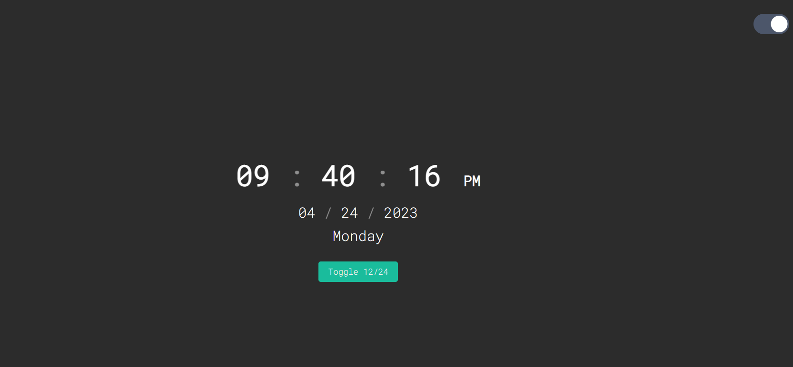
FuturQR
FuturQR is a simple, modern, and user-friendly QR code generator that allows users to create QR codes with a heart-shaped overlay. This project is perfect for a college assignment or anyone looking to generate QR codes quickly and easily.
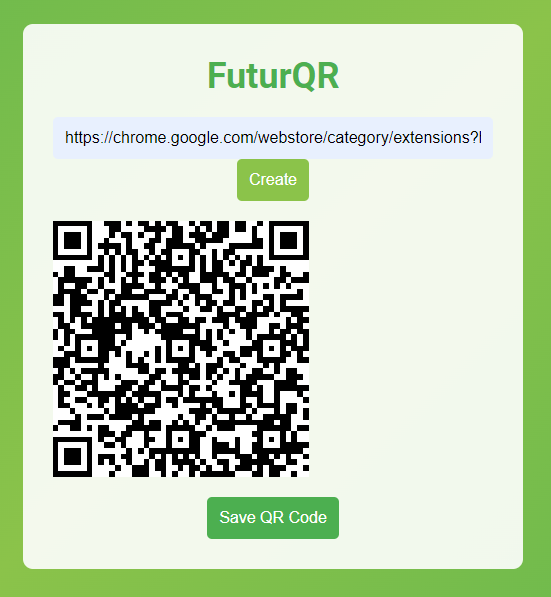
To-Do List
This is a to-do list Chrome extension that allows the user to add, update, and delete tasks. The extension saves the tasks in the Chrome storage so that they persist even after the browser is closed. The tasks can be marked as complete and cleared all at once.
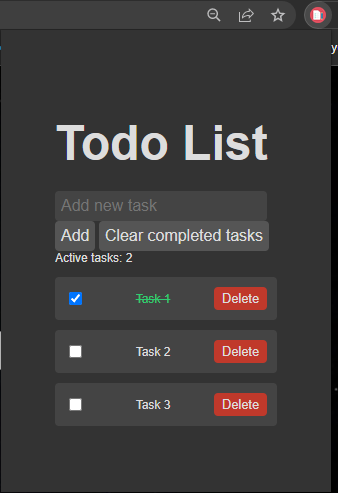
Get In Touch
My inbox is always open. Say hi, I’ll try my best to get back to you!